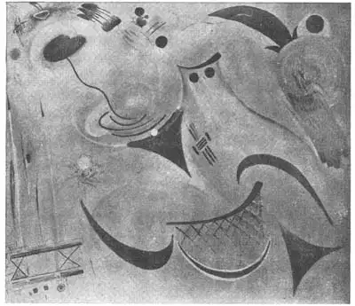
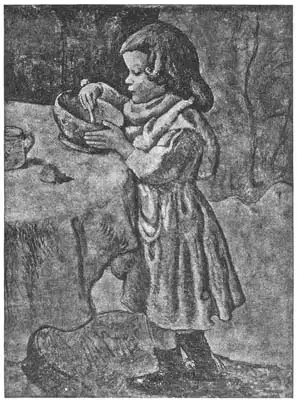
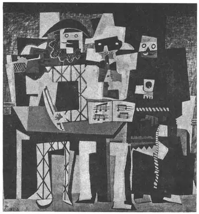
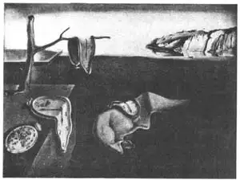

89
NONS AND SURS
非写实和超现实

“WHY, a six-year-old child could paint a better picture than that!” said the man.
“At least it has plenty of bright colors,” said the woman. “Look at all that yellow and orange. I like it. Perhaps it’s supposed to be a sunset.”
“It looks more like a fried egg to me,” the man said.
The man and woman were in an art museum. They were standing before a painting that really didn’t look much like either a sunset or a fried egg. It was all made of yellow and orange paints except for a small dark blue square near one corner. As they moved on to the next painting, the man shook his head. “Modern art is too much for me,” he said. “I just don’t understand it.”
Many people are puzzled by paintings that are not pictures of objects. Such paintings are called non-objective paintings. Non-objective paintings are not supposed to look like sunsets or fried eggs or people or houses or any other objects.
Have you ever tried to find picture’s of objects in the clouds? Did you ever see a cloud that looked like a lion? Many times one can see clouds that look like a landscape with hills and valleys and harbors and islands. But seeing objects in the clouds doesn’t make the clouds more beautiful. The clouds are beautiful whether or not we can use our imagination to see pictures in them.
Non-objective paintings can be beautiful also. They don’t have to look like some object that we can recognize. You can enjoy them more if you don’t puzzle your head over what objects they are supposed to look like. Just remember they are not supposed to look like anything— except a non-objective painting.
Artists who paint non-objective paintings sometimes say, “A camera can make a picture of an object. A photograph will look like the real object. It will have realism. Why should a painter always try to make a picture look realistic? Why should a painter try to do something that a photographer can do with a click of the camera’s shutter?”
How can a person tell whether a non-objective painting is a good painting or a poor one? Why is one building beautiful and another ugly? Why does a moose look clumsy and a deer look graceful?

No.89-1 SCHRZO（#86）（《诙谐曲·作品86号》） RAUER（鲍尔 作）
Courtesy of the Museum of Non-Objective Painting, New York
Boys and girls who try making non-objective pictures themselves usually find they are fun to make. If you try one you may find it easier to use wax crayons instead of paints. Put the colors on strong and thick. Don’t use a pencil, just the crayons. Don’t just scribble; make different shapes.
When you show your non-objective picture to other people, they’ll probably say,“What is it supposed to be?”
And you can answer, “Why, it’s not supposed to be anything. It’s a non-objective picture.”
Of course, most artists still paint pictures of objects. All modern paintings aren’t nonobjective.
There are many modern paintings of objects, however, that are just as puzzling to some people as non-objective paintings. That’s because some people think a painting should show objects just the way they look to your eye or to a camera. They think the objects in these paintings should look real; that they should be realistic.
But a painter may not want to paint objects realistically. He may want to get into the picture some of the feeling he himself has about the object. He may want to use his imagination about the object.
Perhaps the artist may want to show all four sides of the object in the same picture. Usually when you look at an object you don’t see more than two sides. When you look at a table, for instance, you know it has four legs but often you can see only two legs at once.
One of the best-known of modern painters at first painted pictures that showed people and objects as they really looked. They were realistic paintings. Then he got tired of painting realistic pictures. He tried other ways of showing objects. Some of his paintings, for example, show the front view and side view of a person’s face in the same picture.
This painter’s name is Pablo Picasso. Picasso was born in Spain but most of his work was done in France.
Look at the two pictures by Picasso in this chapter. The first one is a realistic painting. See how differently the second one is painted. It is not realistic at all. You could never mistake this picture for a photograph of three musicians. The three musicians are there in the picture all right but you can see they are not painted realistically.
Which picture do you like better? Do you think the non-realistic picture is more interesting than the other one?
Would you say “The Three Musicians” is a non-objective picture? It isn’t, because it shows objects—the musicians. We can simply call it a non-realistic picture.
Another way of painting is called surrealism. In a dream anything can happen. In a surrealistic painting anything can happen too. People can have heads made of cabbages. People can have bodies made of bureau drawers or have trees growing out of their ears, just as in a dream.
One famous surrealistic painting shows several watches. They look exactly like real watches except for one thing: they bend. They are limp, like pancakes.
Look at the picture. Notice the ants in one of the watches. Why should ants be in a watch? There doesn’t have to be a reason, because the painting is surrealistic.
This painting was made by a man named Salvador Dali, who was born in Spain but came to live in the United States.

No.89-2 LE GOURMET（《美食廊》）
PICASSO（毕加索 作）
Courtesy of The Art Institute of Chicago
Dali is the best-known of the surrealistic painters. Most of their paintings are clearly and smoothly painted with great skill. They are realistic paintings except that the objects in the pictures are often impossible objects. If there were limp watches, however, that’s the way they would look.

No.89-3 THE THREE MUSICIANS（《三位音乐家》） PICASSO（毕加索 作）
Courtesy of the Philadelphia Museum of Art A.E. Gallatin Collection
Surrealistic paintings are puzzling just as a dream is puzzling. They are interesting and fun to look at just as a dream is fun—unless it’s a nightmare. Often the artists who paint surrealistic pictures make them still more puzzling by giving them strange titles. The title of the limp watches is “The Persistence of Memory.” What does that mean? Your guess is as good as anyone’s.

No.89-4 THE PERSISTENCE OF MEMORY（《记忆的耐力》） DALI（达利 作）
Collection the Museum of Modern Art, New York
When you next visit an art museum see how many nons and surs you can pick out—the nons for non-objective and non-realistic paintings and the surs for surrealistic pictures.
【中文阅读】
“天哪！一个六岁的孩子居然画得比这还要好！”他说。
“至少它颜色鲜艳，”她说。“看看上面的黄色和橘色，我喜欢，也许它表现的是日落。”
“在我看来它更像一个煮熟的鸡蛋，”他说。
男士和女士都在博物馆里。他们正站在一幅看不出来到底是日落还是鸡蛋的画前。画的主色调是黄色和橘色，除了边角处有一点深蓝色的方块。他们挪步来到另一幅画前，男士摇了摇头。“现代艺术我实在接受不了，”他说，“根本就看不懂。”
大部分人对非实物绘画都是一头雾水。这样的画称作“非写实绘画”，就是那些看起来既像日落，又像熟鸡蛋，或者说既像人，又像房屋，或又像其他任何实物的画。
你可曾观察过天上的云彩所形成的式样呢？譬如形成一头狮子？我们经常会看到云彩形成某种景象，如小山、河谷、港湾、岛屿。但是云彩在我们眼中所形成的式样并不使云彩更好看。云彩本身就是美的，而并不管我们在想象中能否看见形象。
非写实绘画也是美的。它们也不管我们能否从中看出多少形象。只要我们不老想着它究竟像什么，我们就可以欣赏它们的美。但要记住——它们本身就没指望让人看出像什么——它们就是非写实绘画。
非写实画的画家们有时会说，“相机可以拍出实物的原貌。拍出的照片就跟实物一模一样。它有真实的感觉。画家为什么老是要把画画得那么真实呢？画家问什么非要画照相机一闪就能拍出的画面呢？ ”
那我们怎样分辨非写实绘画的优劣呢？为什么有的大楼好看，有的不好看呢？为什么麋看上去很笨拙而鹿看起来就很优雅呢？
小朋友们试着画点非写实画会觉得很好玩。试一下就会发现用蜡笔比用颜料容易多了。把颜色涂深涂厚。不要用铅笔，就用蜡笔。不要漫无目的地涂鸦，试着画出不同的形象。
当你把你画的非写实绘画作品拿给别人看时，他们也许会说，“这画的是什么呀？”
你可以回答，“哦，它什么也不是。它只是一幅非写实画。”
当然，大多数艺术家还在坚持画写实画。现代绘画也并非都是非写实的。
然而，许多现代写实画也像非写实画一样令人费解。因为有人认为画面形象就应当像照相机所拍出的那样，或眼睛所看到的那样。他们认为画中的形象应当客观，有 真实感。
但也有画家不想把画面形象画得太逼真。他想在画中融入一点自己的感受。他可能是想发挥一下自己的想象。
画家也许想在一幅画中画出物体的四个面。一般而言，你只能看到物体的两个面。以桌子为例，你知道它有四条腿，但你通常一次只能看到两条腿。
有位著名的现代画家起初按实物和人原本的模样来画。它们是写实绘画。后来他厌倦了这些写实的作品，开始尝试用其他方式进行表现。譬如，他有时在一幅画中同时画出人物脸部的正面和侧面。
这位画家叫帕布罗·毕加索。毕加索出生在西班牙，但他的大部分作品都在法国完成。
这一章有两幅毕加索的画。一幅是写实的，另一幅却画得非常不同，一点也不写实。你绝不能把它错看成三位音乐家的照片。画中确实有三位音乐家，但一看就知道画得不真实。
你更喜欢哪一幅呢？你是否觉得非现实主义绘画要有趣得多呢？
你是否把“三位音乐家”这幅画称作非写实画呢？它实际上并不是的。它不是，因为它画了人物——音乐家。我们只能勉强把它称作非现实主义绘画。
另外一种绘画风格叫做“超现实主义”。在梦境里，什么事情都能发生。在超现实主义绘画里，什么事情也都能发生。人头可以画成大白菜；人体可以画成办公桌抽屉；耳朵可以从树上长出，就像在梦里一样。
有一幅著名的超现实主义作品画的是几只手表。它们看上去就像真表，只不过弯曲了。它们像薄饼那样耷拉着。
看一下这幅画就注意到有块表上爬了几只蚂蚁。蚂蚁为什么爬到一只手表上？不需要理由，因为这是超现实主义绘画。
这幅画是由一位叫做萨尔瓦多·达利的人画的。他生于西班牙，后来到美国定居。
达利是最有名的超现实主义画家。超现实主义画家的大部分作品都风格清新、笔触细腻、技巧高超。它们都是写实画，只是画上物体通常都表现得不可思议。如果手表呈柔软状，那就是他们表现的风格。
超现实主义作品就像梦境一样让人难以破解。它们看起来就像梦境一样有趣而搞笑——除非是噩梦。创作超现实主义绘画的艺术家通常会给他们的作品加上奇怪的标题，使作品更加让人费解。柔软的手表题为“记忆的耐力”。什么意思呢？你的想象力和别人一样优秀。
当你下次去参观博物馆时，看看有多少非和多少超，“非”是指非写实绘画和非现实主义作品，“超”是指超现实主义绘画。